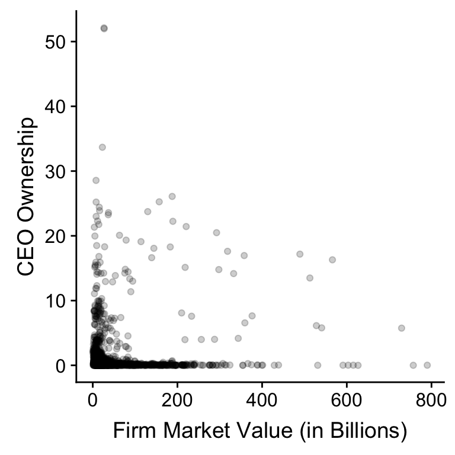
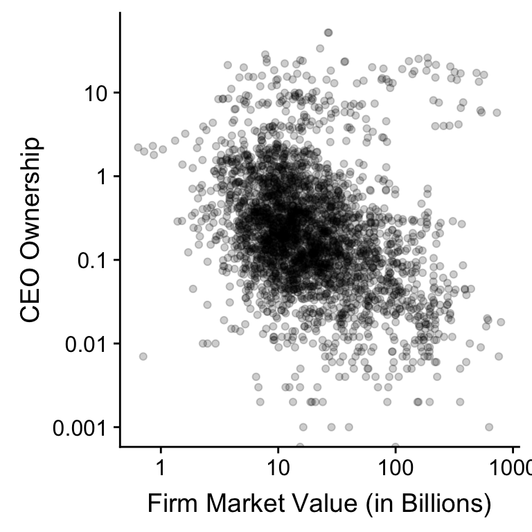
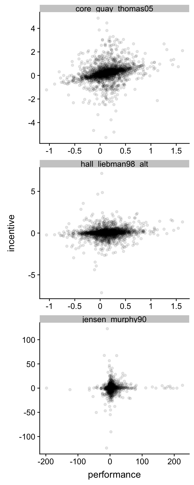
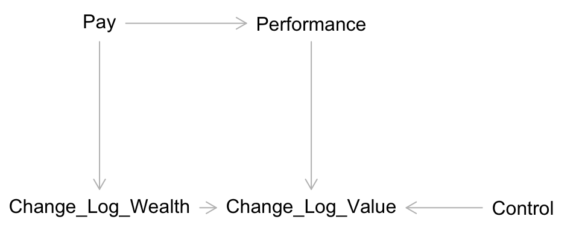
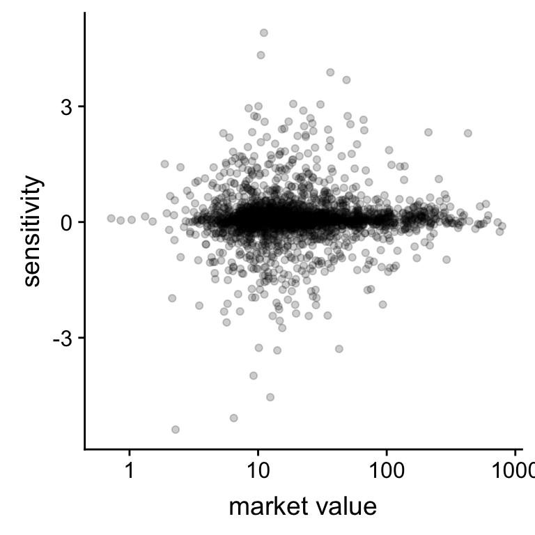
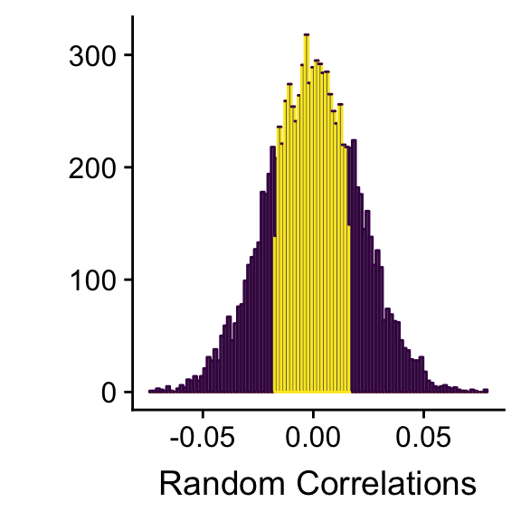
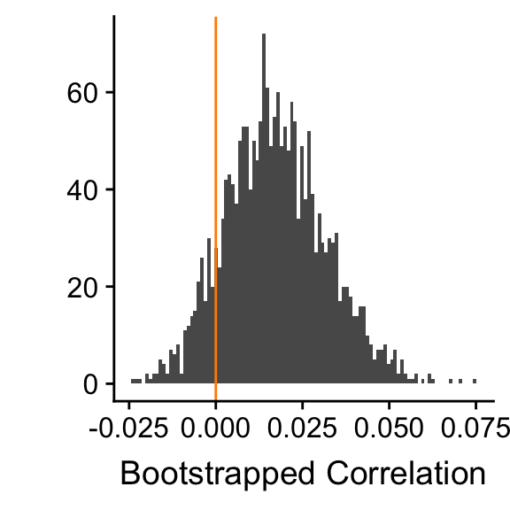

Chapter 7 Measurement and Theory
7.1 Introduction
Chapter 5 explained how different functions can describe the relation between total CEO compensation and firm size (or firm value). While the total amount of CEO compensation is a hot-button issue, another discussion is whether CEO compensation reflects pay-for-performance. That is, do CEOs get more compensation when the firm performance better and vice versa.
In 1990, Jensen and Murphy (1990) reported that for every $1000 loss (gain) in firm value, a CEO only loses (gains) $3.25 and took that as evidence that CEO compensation was not aligned with shareholder value.37 In this chapter, I will use advances in the literature to show that their conclusion depends on how pay-performance sensitivity is measured. The main take-away from this chapter should be that the way you measure your variables is guided by the assumptions in your theory.
7.2 Assumptions About CEOs
There are two assumptions we can make about CEOS. The first is what the impact is of a CEO on the firm and the second is about the CEO’s preferences. Let us tackle these assumptions in order..38
The first assumption is about whether the actions of a CEO scale with the size of the firm. That is, do the actions of a CEO have the same impact on firm value in a small firm and in a large firm? Some actions such as using the corporate jet or sponsoring a sports team have the same impact independent of the firm size. If the company pays for a corporate jet, they pay the same amount of money whether they are large or small. Other actions such as implementing a better strategy, attracting better employees, or developing better relations with investors will impact the entire firm and thus will have a larger monetary impact in large firms.39
The second assumption is how CEOs value their leisure time. They can see leisure time as independent of the compensation. For instance, they could think of the opportunity cost of being at work. They could value their time off work as independent of their income. A day with family is as important independent of your compensation. However, the other assumption is that leisure time is more valuable if you have high compensation. For instance, if you earn a lot of money, you can do a lot more on your holidays.40 Another, possibility is that CEOs are already rich and they could just invest their own fortune and earn a lot of money that way.41
7.3 Optimal CEO incentives
When I say optimal CEO incentives I mean optimal from an optimal contracting between shareholders and CEO point of view. This could still be suboptimal from a social perspective. It also means that we take into account that the CEO might be risk averse and we might need to pay them more money to overcome the risk aversion.
The two assumptions have in impact on how a firm should incentivise the CEO to maximise firm value. If the actions of a CEO are independent of firm size, then the right performance measure for CEOs is the increase in the monetary value of the firm. If the actions of the CEO have a bigger impact in large firms,42 the right performance measure is the increase in firm value compared to the size of the firm.
If the CEOs’ preferences for not working are independent of their compensation, firms can reward the CEOs independent of how wealthy they already are. That is, the better they perform the more money they get. In contrast, if the CEOs’ preferences depend on how wealthy they are, they expect more money if they are already wealthy. The reward of these CEOs should be proportional to their wealth.
As a result, the literature has defined pay-performance sensitivity in three different ways.
$ Pay - $ Firm value: This is the Jensen and Murphy (1990) measure. For every change in dollar firm value, the CEOs compensation changes with a fixed dollar amount. The consequence of these assumptions is that you would expect CEOs to hold the same equity stake in small and large firms.
$ Pay - % Firm value: For every % increase in firm value, there is a fixed dollar amount paid to the CEO. You an think of this measure of pay-performance sensitivity as a bonus system where the CEO gets a bonus for every increase in the companies stock market return.
% Wealth - % Firm value: For every increase % increase in the value of the firm, the CEO should receive a fixed % increase in their wealth. This is the measure that is advocated for in Edmans and Gabaix (2016) and I also belief that the evidence is most in favour of this definition and thus the assumptions that a CEO’s actions and preferences depend on firm size and on CEO wealth respectively.
Mathematically, we can represent each definition as follows:
- \(\frac{\partial W}{\partial V} = \frac{\partial W}{\partial r} \frac{1}{V_0}\)
- \(\frac{\partial W}{\partial r}\)
- \(\frac{\partial W}{\partial r} \frac{1}{W_0}\)
Where \(V\) is the value of the firm at a certain point, \(W\) is the CEO’s wealth, and \(r\) is the return of the stock compared to the starting value \(V_0\). Because derivatives are not empirically observable, we have to look at changes in wealth and firm value over two different time periods. The measures that follow from the mathematical definitions are as follows where we use the fact that \(\Delta W = W - W_0\) and \(ln(W) - ln(W_0) = ln(\frac{W}{W_0})\)
- \(\frac{\Delta Wealth}{\Delta Firm\ Value}\)
- \(\frac{\Delta Wealth}{\Delta ln(Firm\ Value)}\)
- \(\frac{\Delta ln(Wealth)}{\Delta ln(Firm\ Value)}\)
To reiterate, we have three different measures of pay-performance sensitivity, i.e. how well CEO compensation reflects the performance. For each measure, we have assumed that the firm will use the optimal incentives given our assumption about the CEO’s actions and their preferences. The point of this exercise is that different assumptions determine how you should measure the variable you want to analyse. In the next section, we are going to investigate how these three measures behave in the S&P500 sample.
7.4 What does the data say?
Let us first reload the data. We need a measure for the wealth of the CEO. I am going to assume that the most important component of the CEO’s wealth is their shares in the company. This is obviously not perfect but it is not a bad guess for S&P500 CEOs either.
library(tidyverse)
us_comp <- readRDS("data/us-compensation.RDS") %>%
rename(total_comp = tdc1, shares = shrown_tot_pct)
us_value <- readRDS("data/us-value.RDS") %>%
rename(year = fyear, market_value = mkvalt)
us_comp_limit <- select(us_comp, gvkey, execid, year, shares, total_comp)
us_comp_value <- left_join(us_comp_limit, us_value,
by = c("year", "gvkey")) %>%
# Delete the observations with missing values.
filter(!is.na(market_value) & !(is.na(shares))) %>%
mutate(wealth = shares * market_value / 100)
max(us_comp_value$market_value)/1e3## [1] 790.0501max(us_comp_value$wealth)/1e3## [1] 92.24485To get an idea wheather I did not make any mistakes I let R print the maximum market value and the maximum CEO wealth in the dataset. We can compare this to some known values to check whether we made any mistakes in putting the dataset together. Apple’s market value at the time of writing hovers around $800 billion and Jeff Bezos43 is worth around $100 billion. So the proxies are not a terrible first attempt.44
Above I explained that the first measure ($-$) assumes that the percentage share of stock the CEO owns will be independent of the size of the company. To test this hypothesis, Figure 7.1 plots the percentage share the CEO owns against the size of the company.
shares_size <- ggplot(data = us_comp_value,
aes(x = market_value/1000, y = shares)) +
geom_point(alpha = .20) +
ylab("CEO Ownership") +
xlab("Firm Market Value (in Billions)")
plot(shares_size)
Figure 7.1: Relation between CEO ownership and market value for SP500 firms (2011-2018).
The figure is not that instructive so let’s plot the data on the log-log scale in Figure 7.2. The bulk of the data now shows a downward trend. This is not consistent with the hypothesis of the $-$ measure of pay-performance sensitivity where we would expect the link between firm size and CEO ownership to be constant.
shares_size_log <- shares_size +
scale_x_continuous(trans = "log",
labels = function(x) prettyNum(x, digits = 2),
breaks = scales::log_breaks(n = 5, base = 10)) +
scale_y_continuous(trans = "log",
labels = function(x) prettyNum(x, digits = 2),
breaks = scales::log_breaks(n = 5, base = 10))
plot(shares_size_log)## Warning: Transformation introduced infinite values in continuous y-axis
Figure 7.2: Relation between CEO ownership and market value for SP500 firms (2011-2018).
Nevertheless, there seems to be a cloud of points at the top of
Figure 7.2 where CEOs have a large stake in the
company and this cloud looks largely independent of firm size. I
suspect that these CEOs are founders who have a larger ownership
share for other reasons than incentives. We can test this idea.
The code below filter all the observations with a market value
above $10 Billion and ownership stake above 1%. I then join those
observations with the CEO’s name and the firm’s name from the
original data, group the observations by CEO and company, and
count the number of years they are in the new data set. The
knitr::kable function formats the table for pdf and html output.
filter(us_comp_value, market_value > 1e5, shares > 1) %>%
select(gvkey, year) %>%
left_join(select(us_comp, exec_fullname, coname, year, gvkey),
by = c("year", "gvkey")) %>%
group_by(gvkey, exec_fullname, coname) %>%
summarise(nr_years = n()) %>%
knitr::kable()| gvkey | exec_fullname | coname | nr_years |
|---|---|---|---|
| 002176 | Warren E. Buffett | BERKSHIRE HATHAWAY | 4 |
| 012141 | Steven A. Ballmer | MICROSOFT CORP | 4 |
| 012142 | Lawrence J. Ellison | ORACLE CORP | 3 |
| 064768 | Jeffrey P. Bezos | AMAZON.COM INC | 6 |
| 160329 | Lawrence Edward Page | ALPHABET INC | 7 |
| 170617 | Mark Elliot Zuckerberg | FACEBOOK INC | 5 |
My hunch looks correct.45 This whole process of plotting the data and checking assumptions on a subset of the data might seem a long detour. You could ask yourself why we are not immediatelly calculating the three measures that we are actually interested in. Checking your assumptions and checking the validity of your dataset for your research question is an important part of the research process.46 And as you can see you do not have to run a statistical test to test your assumptions.
7.5 Three pay-performance sensitivities
Now that we understand our dataset, we can calculate the changes
in CEO wealth, total compensation, CEO compensation and market
value. The last filter is a bit of hack. There are a few wealth
change that are infinite at the log value. That can happen when a
CEO ends up with 0 shares and no compensation. There are only a
handful of these observations and I am ignoring them. Ideally,
you would have a look whether anything funky is going on.
us_comp_value <- group_by(us_comp_value, gvkey, execid) %>%
arrange(year) %>%
mutate(prev_market_value = lag(market_value),
prev_wealth = lag(wealth),
prev_comp = lag(total_comp)) %>%
ungroup() %>%
mutate(change_market_value = market_value - prev_market_value,
change_wealth = wealth - prev_wealth,
change_comp = total_comp - prev_comp,
change_log_value = log(market_value) - log(prev_market_value),
change_log_wealth = log(wealth) - log(prev_wealth),
change_log_comp = log(total_comp) - log(prev_comp)) %>%
filter(!is.infinite(change_log_wealth),
!is.infinite(change_log_comp)) %>%
arrange(gvkey)With these variables, we can replicate the basic approach of some key papers on executive compensation. The first regression takes the Jensen and Murphy (1990) approach and investigates the relation between a change in market value and a change in CEO compensation (Measure 1 in 7.3). The second and third regression follow the approach of Hall and Liebman (1998) where we look the relation between relative changes in market value and relative changes in total CEO compensation.47 Finally, the fourth regression follows the Core, Guay, and Thomas (2005) and looks at the relation between changes in relative market value and relative CEO wealth.48
jensen_murphy90 <- lm(change_comp ~ change_market_value,
data = us_comp_value)
hall_liebman98 <- lm(change_log_comp ~
I(change_market_value/prev_market_value),
data = us_comp_value)
hall_liebman98_alt <- lm(change_log_comp ~ change_log_value,
data = us_comp_value)
core_guay_thomas05 <- lm(change_log_wealth ~ change_log_value,
data = us_comp_value)coef(jensen_murphy90)[2]## change_market_value
## 0.02776021coef(hall_liebman98)[2]## I(change_market_value/prev_market_value)
## 0.2396687coef(hall_liebman98_alt)[2]## change_log_value
## 0.3089091coef(core_guay_thomas05)[2]## change_log_value
## 0.7527356Jensen and Murphy found that a CEO gets $3.5 for every $1000 change in market value. Our estimate is $0.028 for every $1000 change in market value. The difference is first of all an indication that this simple analysis is not the best estimate but it probably also means that the $-$ incentives are not the best measure. Recall from Figure 7.2 that CEO ownership decreases with firm size. Since the study was published, companies have become larger which pushes the $-$ measure lower.49
The original Hall and Liebman (1998) measure shows that CEOs see a 0.24% increase in pay for every 1% increase in firm value, the alternative measure shows a 0.31% pay-performance sensitivity. Finally, the Core, Guay, and Thomas (2005) measure shows a 0.75% wealth-performance sensitivity.
7.6 Comparison plot
We can plot the results as well to get a better intuition of the
what this results mean. The code is long and boring but not so
difficult to understand. First, make a new dataset with all the
change in pay and change in performance variables. Next, just
copy the new dataset three times. Create a new variable
analysis for each type of analysis. Create a new variable
incentive and performance for each type of analysis.
data_comparison = select(us_comp_value, change_comp,
change_market_value,
change_log_comp, change_log_value,
change_log_wealth) %>%
filter(complete.cases(.))
n = nrow(data_comparison)
data_comparison = bind_rows(data_comparison, data_comparison,
data_comparison) %>%
mutate(analysis = c(rep("jensen_murphy90", n),
rep("hall_liebman98_alt", n),
rep("core_guay_thomas05", n))) %>%
mutate(
incentive = recode(analysis,
"jensen_murphy90" = change_comp/1000,
"hall_liebman98_alt" = change_log_comp,
"core_guay_thomas05" = change_log_wealth),
performance = recode(analysis,
"jensen_murphy90" = change_market_value/1000,
"hall_liebman98_alt" = change_log_value,
"core_guay_thomas05" = change_log_value)) %>%
select(analysis, performance, incentive)Now, we can plot the the incentive to performance relation for the data in Figure 7.3. Despite all all the caveats about how unpolished this analysis is, the figure shows that neglecting CEO ownership is going to lead you to underestimate the pay-performance sensitivity for CEOs.
comparison_plot = ggplot(data_comparison,
aes(x = performance, y = incentive)) +
geom_point(alpha = .1) +
facet_wrap( ~ analysis, ncol = 1, scales = "free") +
scale_x_continuous(breaks = scales::pretty_breaks(n = 5),
labels = function(x) prettyNum(x, dig = 2)) +
scale_y_continuous(breaks = scales::pretty_breaks(n = 5),
labels = function(x) prettyNum(x, dig = 2))
print(comparison_plot)
Figure 7.3: Comparison of three measures of pay-performance sensitivity for S&P500 Companies (2011-2018)
7.7 Libby boxes
An empirical study can often be represented in the form of a diagram as in Figure 7.4. These diagrams are often referred to as the Predictive Validity Framework or, in the accounting literature, Libby Boxes (Libby, Bloomfield, and Nelson 2002). The top of the diagram represents the research question. We want to ask whether there is a relation between two theoretical concepts. In our case, we want to know whether there is a relation between CEO incentive pay and firm performance. Chapter 5 dealt with how to use theory to predict a relation between two concepts. In reality, we cannot directly observe pay and performance, so we have to come up with a measure of these concepts. This Chapter has dealt with the issue of how we can find a good measure for our two concepts. The downwards arrows represent the connection between the theoretical concepts and the empirical measures. At first, you might have thought that it is obvious how to measure CEO performance and firm performance. The pay-performance sensitivity example should make you realise that you need to think careful about what you measure and how your measure connects to your theory. Most statistics textbooks focus on the link between the two measures, ´change_log_wealth´ and ´change_log_performance´ in our case. This is the next step in this Chapter. Later in the notes, I wil look at the issue of control variables.
library(dagitty)
libby_boxes <- dagitty('dag {
Pay [pos = "0, 1"]
Performance [pos = "1, 1"]
Change_Log_Wealth [pos = "0, 2"]
Change_Log_Value [pos = "1, 2"]
Control [pos = "2, 2"]
Pay -> Performance
Pay -> Change_Log_Wealth
Performance -> Change_Log_Value
Change_Log_Wealth -> Change_Log_Value
Control -> Change_Log_Value
}')
plot(libby_boxes)
Figure 7.4: Predictive Validity Framework or Libby Boxes for pay-performance sensitivity
7.8 Are incentives independent of size?
Section 7.4 showed that there was a negative relation between CEO ownership and the size of the company. The relation is pretty strong and we did not look at it in more detail. In a real study with more subtle effects, you want to get some sense whether the relation is real or whether it can be explained by random variation.
I will illustrate this issue with the new pay-performance sensitivity. The optimal performance contract should not depend on the size of the firm only on the performance of the firm. Figure 7.5 shows the relation between pay-performance sensitivity and the size of the firm. The figure does not show any strong relation between firm size and pay-performance sensitivity.
hypothesis = ggplot(us_comp_value,
aes(y = change_log_wealth - change_log_value,
x = market_value/1000)) +
geom_point(alpha = .2) +
scale_x_continuous(
trans = "log",
breaks = scales::log_breaks(n = 5, base = 10),
labels = function(x) prettyNum(x, dig = 2)) +
xlab("market value") +
ylab("sensitivity")
print(hypothesis)## Warning: Removed 770 rows containing missing values (geom_point).
Figure 7.5: Relation between pay-performance sensitivity and market value
There a number of different ways to test whether this relation is real or whether it can be explained by random fluctuations. I first present two simulation based approaches and then present an approach based on formulas. Statistical software typically implements the formulas for you so you do not have to remember them.
The starting point for each of these tests is that if there is no relation, the true effect that we are interested in50 equals \(0\). Because of random variation, the number in the statistical analysis51 might be slightly off. Each of the three approaches tries to quantify that random variation around a the null effect.
7.8.1 Randomisation Test
The first way to quantify the random variation is to randomly assign one observation of the firm-year to another obervation of a CEO-year. That is we create a dataset where we link the sensitivity of a CEO’s pay with the market value of another firm. The general idea of a randomisation test is that you break the relation that you want to test and see whether the value in the real dataset is extreme compared to the randomised dataset.
data_hypo <- mutate(us_comp_value,
sensitivity = change_log_wealth - change_log_value) %>%
select(sensitivity, market_value) %>%
filter(complete.cases(.))
true_cor <- cor(
data_hypo$sensitivity, data_hypo$market_value)
rand_cor <- cor(
data_hypo$sensitivity, sample(data_hypo$market_value))
print(prettyNum(c(true_cor, rand_cor), dig = 2))## [1] "0.017" "0.012"So, we find that the correlation in the real dataset is different
from the correlation in the random dataset but it does not allow
us to draw any conclusions. We need to draw a lot of random
datasets and compare that random dataset to the real correlation.
That is what the next lines of code do. First, create a function
that resamples the market value and calculates the correlation.
Second, rerun that function \(10,000\) times. rand_cor is a
vector with randomly created correlations.
simulate_cor = function(data){
return(cor(data$sensitivity, sample(data$market_value)))}
rand_cor = replicate(1e4, simulate_cor(data_hypo))Figure 7.6 visualises the test. We plot a histogram of the random correlations and compare them to the size of the of the real correlation. We want to test whether the value of the real correlation is extreme, so we compare the random distribution to correlations with an absolute value larger than the real correlation in orange.
hist_sim <- qplot(rand_cor, bins = 100,
col = abs(rand_cor) < abs(true_cor)) +
xlab("Random Correlations") +
scale_color_viridis(discrete = TRUE) +
theme(legend.position = "none")
print(hist_sim)
Figure 7.6: Random correlation compared to real correlation
pvalue_sim = mean(ifelse(abs(rand_cor) > abs(true_cor), 1, 0))
print(prettyNum(pvalue_sim, digits = 2))## [1] "0.42"We can calculate how likely it is that a random correlation is larger (in absolute value) than the true correlation. We find that there is 0.42 probability of getting the true value with randomisation. That means that there is little evidence of a relation between pay-performance sensitivity and firm size.
7.8.2 Bootstrap
Another way to test whether there is a relation between two variables is the bootstrap (Efron and Hastie 2017). The idea of the bootstrap is that the sample of firms that we have is a good reprentation of a bigger population of (very large) firms.52 In this procedure, we assume that the random variation comes from the sampling error compared to the full population. The bootstrap will resample the observations in the real dataset with replacement. We keep CEOs and firms together this time but in the newly created datasets some observations might occur more than once. If we create enough of these datasets, we will get a good representation of the correlations we get from repeatedly sampling from the larger population.
calc_corr <- function(d){
n <- nrow(d)
id_sample <- sample(1:n, size = n, replace = TRUE)
sample <- d[id_sample, ]
corr <- cor(sample$sensitivity, sample$market_value)
return(corr)
}
boot_corr <- replicate(2000, calc_corr(data_hypo))We visualise the sampling variation in the correlation in Figure 7.7. We can now compare this distribution to a \(0\) correlation. If the distribution is (almost) entirely on one side of a null effect, we would conclude that sampling variation around a nulll effect is not a good explanation for the effect that we found in the real sample. However, in this case, we find that a considerable amount of the distribution is on either side of the orange line. Again, we find no good reason to belief there is anything more than random variation around a null effect.
qplot(boot_corr, bins = 100) +
geom_vline(aes(xintercept = 0), col = "darkorange") +
xlab("Bootstrapped Correlation")
Figure 7.7: 2000 bootstrapped correlations
TODO: boot package
7.8.3 P-values
Randomisation and bootstrapping make different assumptions about where the random variation comes from and what it means that there is no effect. There is an active discussion in the econometrics literature about which assumptions are more appropriate under which conditions. However, most empirical researchers ignore these questions and trust in formula based p-values. The interpretation of p-values is closer to the bootstrap. We test whether the real correlation is extreme enough so that it is unlikely that it arises sampling variation around a null effect.
cor = cor.test(data_hypo$sensitivity, data_hypo$market_value)
pvalue_cor = cor$p.value
print(prettyNum(pvalue_cor, dig = 3))## [1] "0.414"We can let R do the calculation for us and we see that the p-value for the correlation between sensitivity and market value is 0.414. This is really close to the value we got from the randomisation test. Again, it looks like that the correlation is quite likely to emerge from sampling variation around a null hypothesis.
Finally, I would like to point out the relation between linear regression and a correlation. When there is only one independent variable in a regression model, the correlation test is equivalent to the statistics we get from a regression.
\[\begin{align*} y &\sim \mathcal{N}(\alpha + \beta x, \sigma) \\ \beta &= \frac{sd(y)}{sd(x)} cor(x, y) \end{align*}\]
regr_sens = lm(sensitivity ~ I(market_value/1e6), data = data_hypo)
print(coefficients(summary(regr_sens)), dig = 2)## Estimate Std. Error t value Pr(>|t|)
## (Intercept) 0.071 0.016 4.36 1.4e-05
## I(market_value/1e+06) 0.171 0.209 0.82 4.1e-01In summary, most empirical researchers use p-values to estimate how far away the estimated coefficient is from the null effect. To do that they use formulas that estimate the standard error of the coefficient. If the coefficient is large and the standard error is small, we expect the effect to be extreme compared to the null effect. To estimate how likely it is that the real coefficient is the result of random variation around the null, your software calculates a statistic, the coefficient divided by the standard error. This t-statistic is expected to follow a t-distribution and from this distribution we can calculate the p-value.
Most empirical papers will try to find small p-values. That is they try to show that there is a relation. I deliberately chose an example where there is no relation between the two variables of interest because and where that is also what we hoped to find. Our theory said that there should not be a relation between sensitivity and size and after looking at the data we have no reason to believe otherwise. This type of test is a natural fit for p-values and this is why I introduced them in this way.
There is a lot of discussion in the literatur about abuses and misinterpretations of p-values. My hope is that I put you on the right path to interpreting p-values despite all the traps that have been laid for you in the literature.
References
Jensen, Michael C., and Kevin J. Murphy. 1990. “Performance Pay and Top-Management Incentives.” Journal of Political Economy 98 (2): 225–64. https://doi.org/10.1086/261677.
Edmans, Alex, and Xavier Gabaix. 2016. “Executive Compensation: A Modern Primer.” Journal of Economic Literature 54 (4): 1232–87.
Hall, Brian J., and Jeffrey B. Liebman. 1998. “Are CEOs Really Paid Like Bureaucrats?” The Quarterly Journal of Economics 113 (3): 653–91. https://doi.org/10.1162/003355398555702.
Core, John E., Wayne R. Guay, and Randall S. Thomas. 2005. “Is U.S. CEO Compensation Broken?” Journal of Applied Corporate Finance 17 (4): 97–104. https://doi.org/10.1111/j.1745-6622.2005.00063.x.
Libby, Robert, Robert J Bloomfield, and M Nelson. 2002. “Experimental Research in Financial Accounting.” Accounting, Organizations and Society 27 (8): 775–810. https://doi.org/10.1016/S0361-3682(01)00011-3.
Efron, Bradley, and Trevor Hastie. 2017. Computer Age Statistical Inference.
This study is 30 years old and the authors would argue that CEO compensation is currently better aligned with firm performance.↩
This chapter is entirely inspired by Edmans and Gabaix (2016)↩
In a way, the question is whether shareholders should care more about the ability of CEOs to directly destroy value or trust in the CEOs ability to create value. Although, in a larger firm it might also be easier to fraudulently embezzle more money.↩
Elon Musk and Richard Branson seem to have a lot of fun when they are not working.↩
Think of hedge fund managers who decide to close their fund and run a family fund to just invest their own money and that of some associates and family members.↩
It’s easier to increase firm value by $1 Million for Apple than for a start-up company.↩
before the divorce↩
Especially once you consider that some papers throw away the maxima for some variables because they are considered outliers.↩
Also, I think the
tidyversefunctions are amazing because they make it so easy to quickly look at the data and summarise the data.↩Remember that we derived the three performance-pay sensitivity measures based on the optimal contract between shareholders and owners. The firm needs a contract to govern the conflict of interest between the shareholders and the CEO. If the founder is the CEO, this conflict of interest is different. You could ask yourself whehter you should keep founder-CEOs in the dataset because you do not necessarily expect their contract to follow the optimal contract.↩
The difference between the two specification is that the first uses market returns, just like the original paper, which is not exactly theoretically correct but a very good approximation of the theory.↩
In all cases, the authors of the original papers do a much better job than I do in measuring the variables they are interested in. Do not take the results too seriously although they are a good approximation of the results in the original papers.↩
Jensen and Murphy (1990) looked at more than the direct incentives. They also estimated the potential loss of getting fired. Moreover, total compensation does not take into account wealth. Other studies have found that the $-$ incentives measure of pay-performance sensitivity are smaller for larger firms.↩
That is the top half of the Libby Boxes↩
The bottom half of the Libby Boxes↩
You could think of for instance the same firms in 2019 and 2020 or 2008 and 2009.↩